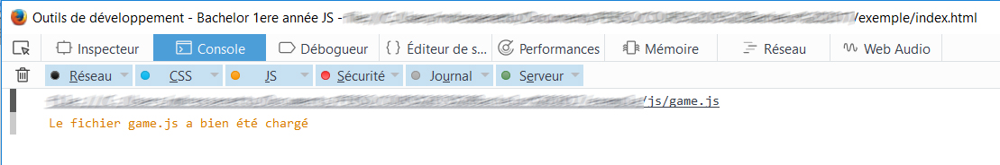

Javascript (JS) c'est : un langage de programmation utilisé dans les productions de type Web en complément de HTML et CSS. Il est généralement écrit dans des fichiers portant une extension *.js intégrés aux pages html et est exécuté par le navigateur du poste de l’utilisateur.
Il permet notamment d’ajouter de l’interactivité, de manipuler le contenu du page (modification des éléments du DOM) et agir sur le CSS.
Javascript est interprété de façon synchrone : c’est à dire que les tâches sont exécutées dans l’ordre imposé par le code et que chaque tâche doit être terminée pour que la suite du programme soit exécutée.
( > Retour au sommaire)
- Mettre à profit les connaissances et savoir-faire acquis en HTML et CSS
- Mettre en place l’architecture minimale pour pouvoir développer en javascript
- Acquérir les bases essentielles de la programmation en Javascript
- Créer un script JS “From Scratch”
- Ajouter de l’interactivité à un site ou une application HTML (ajout d’événements utilisateur)
- Utiliser des librairies (jQuery)
- Accéder et manipuler le contenu du DOM HTML
- Modifier et animer les propriétés de style des éléments
Créer un mini jeu en utilisant les techniques abordées pendant le cours de JAVASCRIPT.
Éléments souhaités :- début (page d'intro)
- gameplay (déroulement du jeu)
- fin (gagné/perdu/neutre/autre)
- rejouabilité/variantes
- affichage de compteur(s) (vies, score, autre…)
- absence de bug(s)
- bases en HTML/CSS (programme de bachelor 1ère)
- créativité : inventivité, originalité, esthétique
- rigueur : qualité du code, respect des consignes, logique
- investissement personnel : motivation, autonomie, "proactivité"
( > Retour au sommaire)
-> Créer les dossiers et fichiers nécessaires à obtenir l’arborescence présentée ci-après.

-> Dans le fichier index.html, intégrer la ligne de code suivante, permettant d’intégrer le fichier javascript à la page, ainsi que la librairie jQuery.
<!DOCTYPE html>
<thtml>
<head>
<meta charset="UTF-8">
<title> JS-Game</title>
</head>
<body>
<!-- ... Contenu HTML -->
<!-- Intégration du fichier game.js -->
<script src="js/game.js"></script>
</body>
</html>
-> Dans le fichier 'game.js' écrire :
document.addEventListener("DOMContentLoaded", (event) => {
// Ici le document est chargé, je peux écrire mon code...
/*
NB : Ceci est un commentaire javascript
Chaque instruction doit être terminée par " ; "
*/
console.log("Le fichier game.js a bien été chargé");
});
-> Vérifier l’apparition du message “Le fichier game.js a bien été chargé” dans la console JS (F12)

( > Retour au sommaire)
Une variable permet d’associer une valeur à un nom et peut servir à représenter un paramètre du programme (ex : nombre de vies du joueur). Cette valeur peut être modifiée par le programme. Le nommage de la variable ne doit pas être identique à un mot-clé existant dans le langage utilisé.
Types de variables- Nombre (number)
- Chaîne de caractères (string) « texte ».
- Booléen (boolean) true, false.
- Tableau (array).
- Objet (object).
Déclaration et affectation :
// number (nombre)
let nbVies = 5; // déclaration d'une variable locale
var level = 1; // déclaration d'une variable globale
const scoreMax = 100; // déclaration d'une constante
// string (texte)
var nomJoueur = "Hugo";
// boolean (vrai ou faux)
var isHeroAlive = false;
// array (tableau)
var decors = ["désert", "jungle", "ville"];
// json object (objet)
var player = { name:"Hero", age:34 };
player.age = 38;
Opérations sur les variables :
Opérations mathématiques (aditions, soustractions,multiplications, divisions, modulo…)
nbVies = nbVies + 1 ; // nbVies = 6
var score = nbVies * 2 ; // score = 12
score++ ; // incrémente la variable score
nbVies-- ; // décrémente la variable nbVies
Concaténation :
let texte = "Il reste " + nbVies + " vie(s) à " + nomJoueur;
console.log ( texte ); // affiche « Il reste 6 vie(s) à Hugo »
Gabarits de texte :
let texte = `Il reste ${nbVies} vie(s) à ${nbVies}`;
console.log ( texte ); // affiche « Il reste 6 vie(s) à Hugo »
Méthodes sur les string : https://developer.mozilla.org/fr/docs/Web/JavaScript/Reference/Global_Objects/String#m%C3%A9thodes_des_instances
Les conditions permettent d’exécuter ou non des instructions (bloc de code) en fonction de la validité d’un critère. La condition est exprimée grâce au mot-clé « if ». Elle peut utiliser des valeurs absolues, des variables, les valeurs renvoyées par des méthodes...
Opérateurs de comparaison :
== « égal à »
=== « strictement égal à »
!= « différent de »
!== « strictement différent de »
> « strictement supérieur à »
< « strictement inférieur à »
>= « supérieur ou égal à »
<= « inférieur ou égal à »
Opérateurs logiques
Il est possible d’exprimer des critères composés grâces aux opérateurs logiques :
|| « OU »
&& « ET »
! « NON »
var nbVies = 1;
if (nbVies == 0) // si le nombre de vies du joueur est égal à 0
{
// insctructions
console.log( " Game Over " );
}
var isGameStarted = false;
// si le nombre de vies du joueur est strictement supérieur à 0 et que la partie n’a pas commencé
if (nbVies > 0 && !isGameStarted)
{
// insctructions
console.log( " Start Game ! " );
}Les boucles for ("pour") permettent la répétition d’un bloc d'instructions de façon itérative un certain nombre de fois.
var decors = ["désert", "jungle", "ville" ] ;
let i ;
for(i=0; i < decors.length; i++)
{
console.log (" Decor " + (i+1) + " : " + decors[i]) ;
}Les boucles while ("tant que") répètent un bloc d'instructions tant que le critère spécifié est valide.
var max = 100;
let i = 0;
while(i < max)
{
console.log( `i est inférieur à max (${i})`);
i +=10;
}Méthodes sur les tableaux :
https://developer.mozilla.org/fr/docs/Web/JavaScript/Reference/Global_Objects/Array#m%C3%A9thodes_des_instances
Une fonction est un morceau de programme réutilisable qui peut être exécuté sur appel. Elle peut prendre un ou plusieurs paramètres en entrée mais aussi retourner une valeur en sortie.
// Fonction startGame
function starGame()
{
score = 0;
nbVies = 5;
}
// Fonction addScore
function addScore( nbPoints )
{
let newScore = score + nbPoints;
return newScore;
}
var score, nbVies;
// Appel aux fonctions startGame puis addScore
startGame () ;
score = addScore(10) ;
// Retourne les élements de type "balise"
let mesElements = document.getElementsByTagName('balise')Sélection d'un élément par son 'id' :
//Retourne l'élément quie a pour id "id"
let monElement = document.getElementById('id');Sélection d'un élément par sa 'class' :
document.getElementsByClassName('class')Sélection par sélecteur CSS
/* retourne le 1er élément correspondant au sélecteur CSS passé en paramètre */
let monElement = document.querySelector('selecteur css')/* retourne l'ensemble des éléments correspondants au sélecteur CSS passé en paramètre */
let mesElements = document.querySelectorAll('selecteur css')
( > Retour au sommaire)
let myElements = document.querySelectorAll(".item");
myElements.forEach((item, index)=>{
//Insctructions à exécter pour chacun des éléments de la liste
// item représente l'élément courrant
// index représente la position de l'élément dans la liste
console.log(index, item);
});document.getElementById('id').classList.add('nomClass');Retirer une class à un élément :
document.getElementById('id').classList.remove('nomClass');Activer/Désactiver une class sur un élément :
document.getElementById('id').classList.toggle('nomClass'); // JSNB : pour savoir si un élement possède une class nommée "nomClass", on écrit :
if(document.getElementById('id').classList.contains( 'nomClass' )) { /* ...instructions */ }( > Retour au sommaire)
document.getElementById('monElement').style.nomPropriete = 'valeur'; // JSNB : Pour connaitre la valeur associée à une propriété on peut utiliser :
console.log( document.getElementById('monElement').style.nomPropriete );let objRect = monElement.getBoundingClientRect();
console.log( objRect.x );
console.log( objRect.y );
console.log( objRect.top );
console.log( objRect.left );
console.log( objRect.right );
console.log( objRect.bottom );
console.log( objRect.width );
console.log( objRect.height );( > Retour au sommaire)
document.getElementById('image').getAttribute('src');document.getElementById('image').setAttribute('src', 'images/paysage.jpg');Définir le contenu HTML d'une balise :
document.getElementById('monElement').innerHTML = 'Bonjour !
';Créer un élément HTML :
let newDiv = document.createElement('div');Ajouter du contenu HTML à un élément :
document.getElementById('monElement').appendChild(newDiv);document.getElementById('monElement').removeChild(newDiv);( > Retour au sommaire)
// Exécute "maFonction" après un délai de 500 millisecondes
let myTimeout = setTimeout(maFonction, 500);clearTimeout(myTimeout); // Annule le délai// Exécute "maFonction" après tous les 500 millisecondes
monInterval = setInterval(maFonction, 500);clearInterval(monInterval); // Annule l'appel à la fonction// Exécute "maFonction" au prochain rendu du navigateur
var reqID = window.requestAnimationFrame(maFonction);window.cancelAnimationFrame(reqID); // Annule le prochain appel à "maFonction"( > Retour au sommaire)
// Instructions à exécuter lorsque l'animation démarre
monElement.addEventListener("animationstart", (event) => { });// Instructions à exécuter lorsque l'animation se termine
monElement.addEventListener("animationend", (event) => { });Transition Start :
// Instructions à exécuter lorsque la transition démarre
monElement.addEventListener("transitionstart", (event) => { });// Instructions à exécuter lorsque la transition se termine
monElement.addEventListener("transitionend", (event) => { });( > Retour au sommaire)
<!-- Ajout de la librairie à la page html -->
<script src="https://cdnjs.cloudflare.com/ajax/libs/gsap/3.12.2/gsap.min.js"></script>// Création d'une tween avec GSAP
const myAnimation = gsap.to(element, {
duration: 1, // durée 1 seconde
delai:1, // délai
repeat:1, // nombre d'itérations (-1 pour infini)
yoyo:true, //
backgroundColor: "red", // background-color
fontSize: 12, // font-size
boxShadow: "0px 0px 20px 20px red", // animate complex strings
borderRadius: "50% 50%",
height: "auto"
});
// Ajout d'écouteurs d'événements sur l'animation
myAnimation.eventCallback("onStart", myStartFunction, ["param1", "param2"]);
myAnimation.eventCallback("onUpdate", myUpdateFunction, ["param1", "param2"]);
myAnimation.eventCallback("onComplete", myCompleteFunction, ["param1", "param2"]);
( > Retour au sommaire)
monElement.addEventListener('type', callback); // Ajout d'un événement en JS" Événements click, mousemove, mouseenter et mouseleave :
monElement.addEventListener('click', function(event){
// Instructions à exécuter au le clic sur l'élément
// event.currentTarget réprésentent l'élément à l'origine de l'événement
});
monElement.addEventListener('mousemove', function(event){
// Instructions à exécuter lorsque le curseur se déplace
// event.currentTarget réprésentent l'élément à l'origine de l'événement
// event.clientX : Position horizontale du curseur
// event.clientY : Position verticale du curseur
});
monElement.on('mouseenter', function(event){
// Instructions à exécuter au survol de l'élément
// event.currentTarget réprésentent l'élément à l'origine de l'événement
});
monElement.on('mouseleave', function(event){
// Instructions à exécuter lorsque le curseur sort de l'élément
// event.currentTarget réprésentent l'élément à l'origine de l'événement
});Documentation :
Événements tactiles :
Là encore, on utilise addEventListener pour "écouter" un événement clavier
window.addEventListener('keydown', function(event)
{
// Instructions à exécuter lorsqu'une touche est enfoncée
// event.key Représente le code de la touche
});
window.addEventListener('keyup', function(event)
{
// Instructions à exécuter lorsqu'une touche est relâchée
// event.key Représente le code de la touche
});DOWN = 'ArrowDown';
UP = 'ArrowUp';
LEFT = 'ArrowLeft';
RIGHT = 'ArrowRight';
Entrée = 'Enter';
Echap = 'Escape';
Espace = ' ';( > Retour au sommaire)
window.addEventListener('resize', function(event)
{
// Instructions à exécuter lors du redimensionnement
// window.innerWidth, représente la largeur de la fenêtre en pixels
// window.innerHeight, représente la hauteur de la fenêtre en pixels
});Événement scroll :
window.addEventListener('scroll', function(){
// Instructions à exécuter lors du défilement
// window.scrollTop, représente la valeur de défilement vertical;
// window.scrollLeft, représente la valeur de défilement horizontal;
});( > Retour au sommaire)